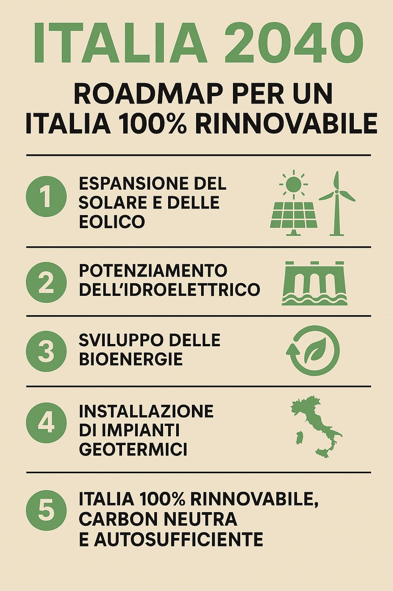

Un sogno concreto per un futuro senza combustibili fossili
Cari uomini e donne di responsabilità,
Vi scrivo da cittadino, da padre, da uomo che ama il suo Paese e guarda con speranza al domani. In questi anni, tra cambiamenti climatici, crisi energetiche e divisioni, si è fatta strada in me una certezza: non possiamo più rimandare il passaggio a un’Italia 100% rinnovabile.
Abbiamo il sole, il vento, l’intelligenza, la tecnologia. Abbiamo bambini che meritano aria pulita, campagne fertili e città vive. Abbiamo la possibilità reale, concreta, non utopica, di liberarci dai combustibili fossili entro il 2040.
Ho immaginato un piano. Una roadmap per l’Italia, costruita senza interessi, senza ideologie, solo con buon senso e amore per la vita. L’ho fatto con l’aiuto di un’intelligenza artificiale, perché il futuro va costruito insieme – umani e tecnologia, mente e cuore.
Vi chiedo di guardare questo poster. È solo un’immagine, sì, ma è anche una visione. Una promessa. E forse, anche una preghiera.
Se questo sogno vi tocca, vi chiedo: parlatene. Diffondetelo. Spingetelo dove potete. L’Italia può essere il faro verde d’Europa. Ma servono coraggio e volontà.
Scarica il Manifesto in PDF Perché è possibile 